Everything in Pro
Order flow, the order book and GEX+ on your charts. See who is trading and where size is waiting.
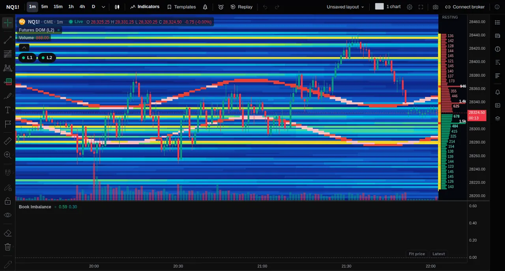


- 21Order flow and order book tools
- 6Level 2 order book tools
- 8Futures with order book data
- 6GEX+ instruments
Counted from the tools in the app. Book data covers NQ, ES, MNQ, MES, YM, RTY, CL and GC. GEX+ covers SPX, SPY, QQQ, ES, NQ and GC.
See what the chart cannot show
Candles tell you where price went. Pro adds who traded, what is resting in the book and where options positioning sits.
- L2
Order book heatmap
Resting orders at every price, behind the candles.
- L2
Footprint
Bought and sold at each price, inside every candle.
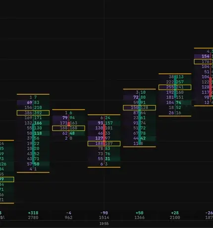
- L2
Delta profile
Buyers against sellers, row by row.
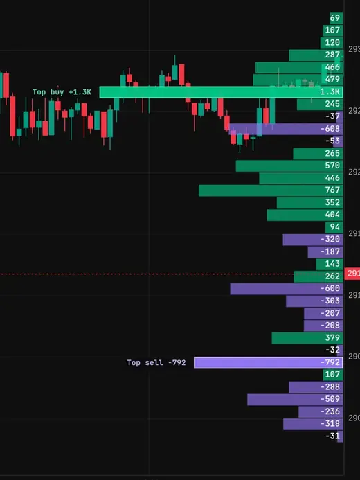
- GEX+
Call wall, put wall, zero gamma
Options levels drawn on your chart.
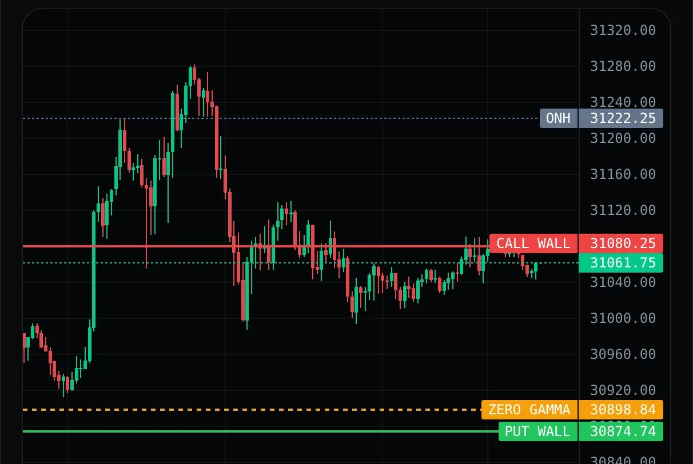
- L1
Imbalance zones
Stacked imbalances, drawn until price trades through.
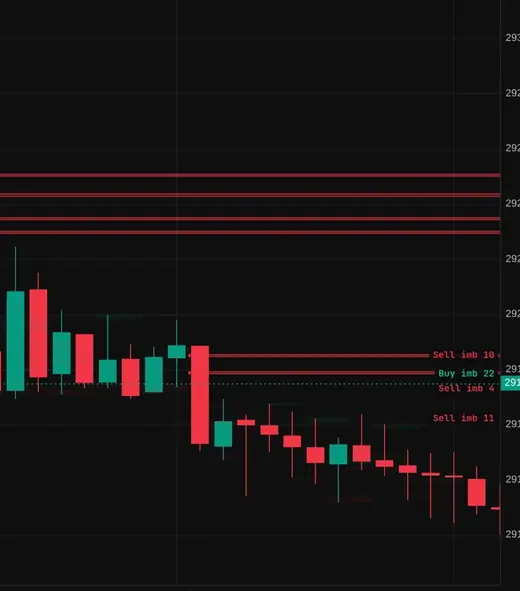
And more
VWAP, Market Profile, Volume Profile, CVD, Stop Runs, Effort vs Result and Expected Move.
Free vs Pro
Screens are sample data from the app. L1 = every trade plus the best bid and ask. L2 = the order book.
Order flow and footprint
Who bought, who sold and where. These tools read every trade, not just the candle. On futures they are the (L2) tools: every trade plus the order book.
- Footprint: every candle split by price, with the busiest price boxed
- Delta: buying minus selling per bar, in 14 looks from a session profile to bars and bubbles
- CVD: the running total of buying against selling, from real trades
- Volume Profile and VWAP with one and two standard-deviation bands
- Market Profile: TPO letters or blocks, initial balance and value area


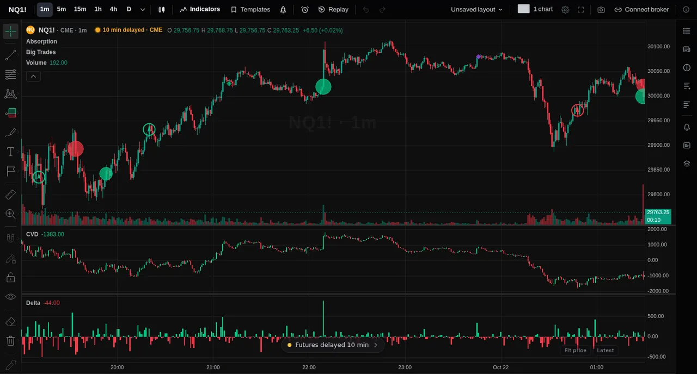
The order book, drawn
The resting orders at every price, so you can see where size is waiting. Level 2 data.
- Order book heatmap in four looks: Midnight, Zoro, Classic and Split
- DOM ladder: bids, asks and the volume traded at each price
- Book · DOM · Trades: one panel, three tabs. Paper orders from the ladder are simulated
- Liquidity Walls tag large resting orders when they are pulled or consumed
- Book Imbalance shows when the bid or ask side is heavier
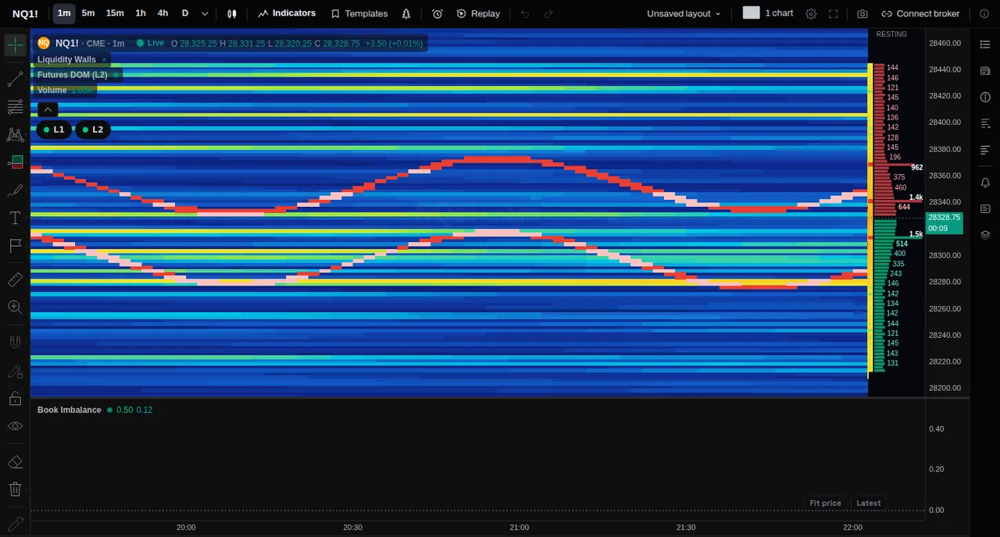
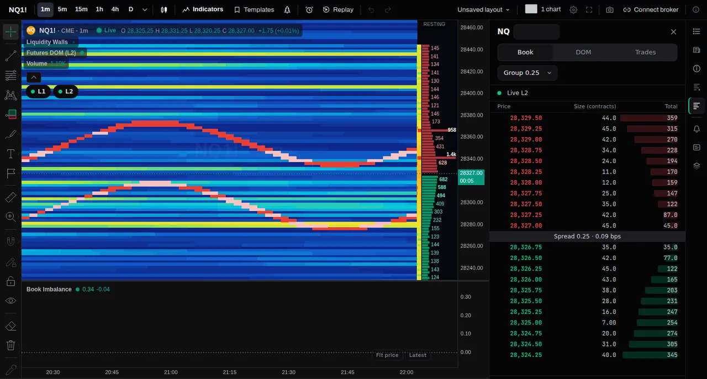
Big trades, absorption and imbalance
Find the prints that matter and the prices where aggressive volume hit a wall.
- Big Trades: bubbles for the largest trades, buyers and sellers in two colours
- Absorption flags bars where heavy aggressive volume hit a price and price did not move
- Imbalance Zones extend until price trades through them
- Stop Runs mark a poke past a swing that closes back inside
- Effort vs Result compares volume with range in its own pane
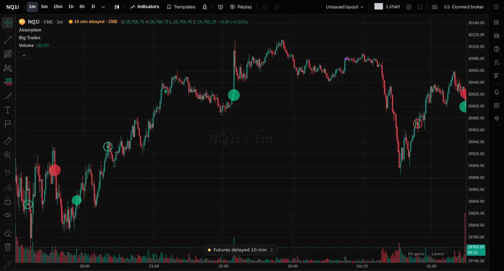


GEX+ on your chart and on its own page
Options positioning turned into levels. It shows how long ago it was updated, so you always know how fresh it is.
- Levels on charts: call wall, put wall, zero gamma and ranked strikes, with previous days
- GEX heatmap and Expected Move from the same options chain
- Every expiry: same-day, 1 day, 7 days, 30 days and more
- Strike table: net GEX, DEX and open interest by strike
- SPX, SPY, QQQ, ES, NQ and gold (GC), with futures levels converted from the index
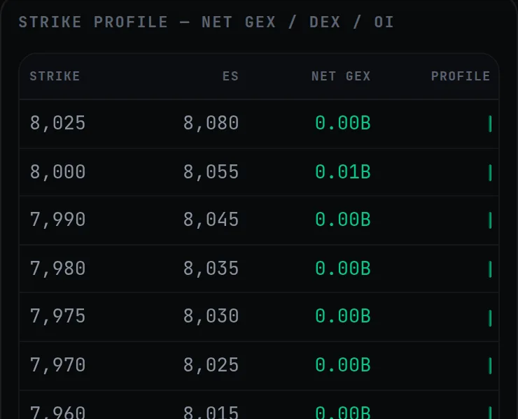
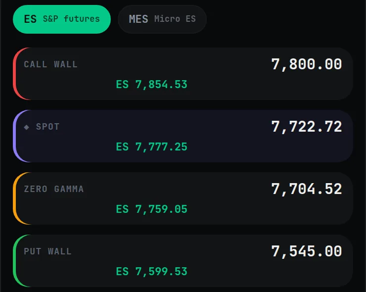
Practise on past sessions
Replay One steps through a past session bar by bar. Pro tools work in it too.
- Order flow tools replay with only the trades up to the replay clock
- Practise reading the footprint and the heatmap on sessions that already happened
- Paper trading is simulated. TradeZoro never places real orders
- JournalX, alerts and layouts stay free for every member
- Pro members get the Pro channels in the TradeZoro Discord. Connect it in Settings
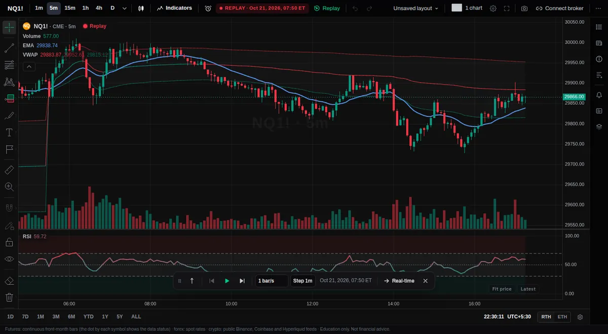
Six more order book tools are being built
They appear on the chart as soon as they are ready, included with Pro.
What stays free, what Pro adds
The charts, Replay One, JournalX, the lessons and the community are free for every member.
Questions about Pro
Can I cancel any time?
Yes. Cancel from Billing in Settings. You keep Pro until the end of the period you have already paid for, and you are not charged again.
Which data does Pro use?
On futures, order flow is the (L2) tools: every trade and the side that started it, plus the order book (the resting orders at each price). Crypto order flow is built from the exchanges' public trades. Each tool above shows whether it uses L1 or L2. GEX+ is built from the options chain and shows when it was last updated.
Is live futures data part of Pro?
Live futures L1 (prices, candles and best bid/ask) is free for every member who signs the market data agreement, on Free and Pro. Until you sign, CME futures are 10 minutes delayed, which is a CME rule. Crypto is live. Pro adds the L2 order book, order flow tools and GEX+. See Plans.
Which devices does it work on?
Any modern browser on desktop, tablet or phone. Nothing to install. The tools run on the same chart on every screen.
Which markets does it cover?
Order flow and the order book run on CME futures such as NQ and ES, and on crypto. GEX+ covers SPX, SPY, QQQ, ES, NQ and gold (GC). A symbol with no trade or book data shows a note instead of an empty chart.
Is anything guaranteed?
No. These are charting and education tools. They do not place real orders, and paper trading is simulated. Education only. Not financial advice.
See the order book, the tape and the levels
Start free. Add Pro when you want order flow and GEX+ on your charts.
Education only. Not financial advice.